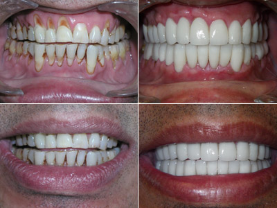
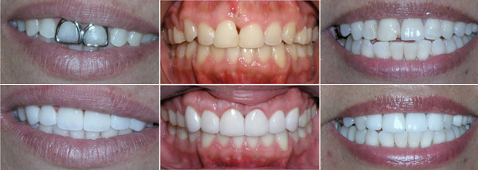

Cosmetic Dentistry in El Paso
Smile Makeovers
If the idea of smiling terrifies you because of various dental concerns, a complete smile makeover may be right for you. Picasso Smiles cosmetic dentists combine treatments and customize them based on your specific needs. After just a few visits, our team can transform your smile in time for that special event, vacation, or all-important job interview. And with sedation, we can complete a smile makeover in one visit!
Ask Dr. Shayesteh or Dr. Shams and his team for more information.

Veneers
If your teeth are chipped, gapped, misshapen, or otherwise discolored or misaligned, porcelain veneers can dramatically restore your smile, giving you every chance possible to show off a new you. Sometimes called "instant orthodontics" because of their ability to make crooked teeth appear straight, veneers are made of pure porcelain. The procedure consists of an initial consultation and two dental visits, from temporary to beautiful, long-lasting permanent veneers.
The advantages of porcelain veneers include:
- Natural color, translucence, and texture
- Extremely durable
- Resist stains and won't decay
- Close gaps between your teeth
- Lengthen and reshape teeth
- Nearly as strong as normal teeth

Lumineers®
Have you heard about Lumineers, one of the latest ways to enhance your smile? Lumineers are a razor thin version of contemporary porcelain veneers, but are easier to place due to their slimmer, more compact design. Like their conventional counterparts, Lumineers are placed in two visits. The difference is that the procedure to place Lumineers is often simpler and doesn't require as much drilling or removal of tooth structure. These slim, sexy veneers are currently a favorite of many celebrities. Don't you deserve a Hollywood smile of your own?
However, not everyone is a candidate for Lumineers. Lumineers are designed for minor chipping, misalignment, and discoloration of teeth. Every patient must be evaluated on an individual basis.
Lava & Porcelain Crowns
Crowns are conservative restorative dentistry placed over your teeth like caps to repair moderate to severe dental decay. The crowns at Picasso Smiles are constructed of 100% all-Porcelain or even the stronger all-Zirconia. That means you don't have to worry about unsightly metal margins disfiguring your smile. Like many other forms of cosmetic and restorative dentistry, porcelain crowns usually require two dental visits, with a temporary crown placed first to allow you to get used to your new restorative treatment.
The advantages of crowns include:
- Size, shape, texture, and color can be controlled (custom-made)
- Restore aesthetics and function to broken, cracked, or filled back teeth
- Can be used on damaged or broken teeth

White Fillings
At Picasso Smiles, we think any filling that doesn't look like your teeth is preposterous – and bad for your dental health and appearance. The silver or amalgam fillings contain mercury which is harmful to the kidneys and the central nervous system! That's why we use white fillings – resin or composite tooth-colored restorations that blend with the shading of your natural teeth. Placed in just one visit, white fillings are completely safe, comfortable, and esthetic. White fillings are used to repair mild tooth decay.